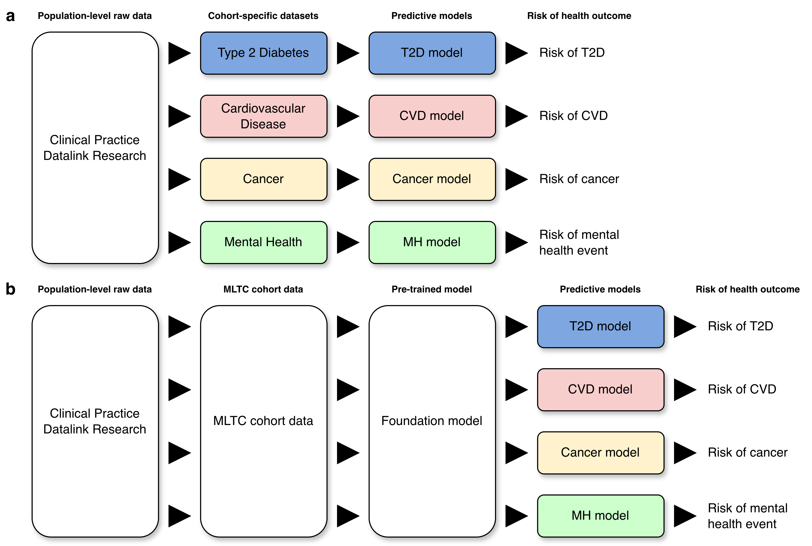
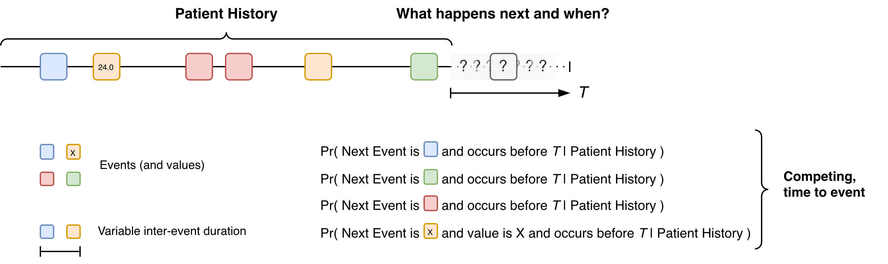
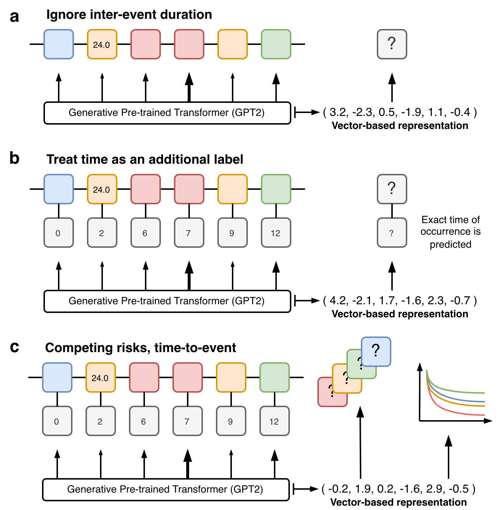
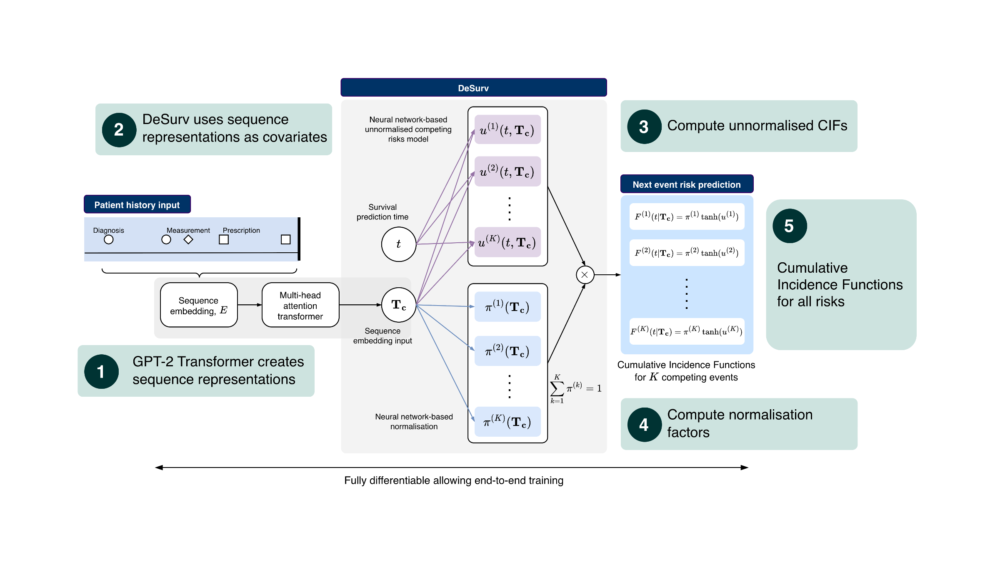
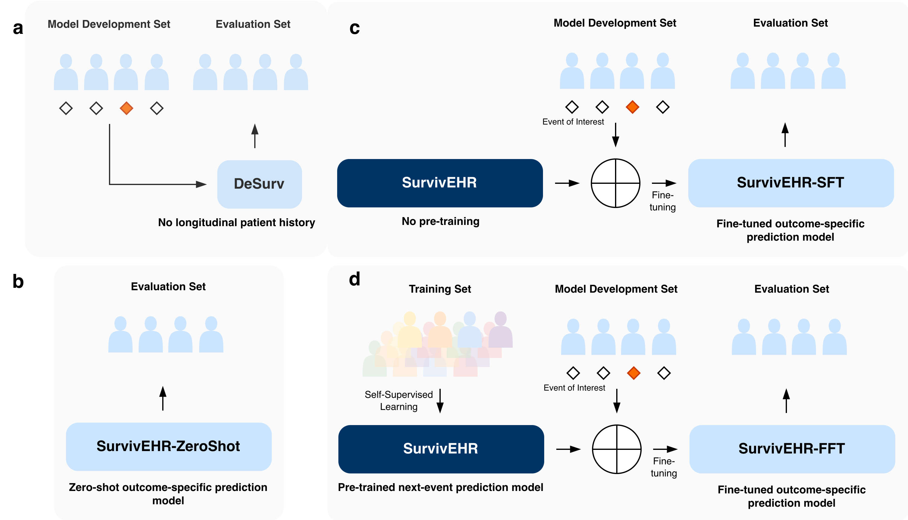

Artificial Intelligence for Multiple Long-Term Conditions
After years of work, our paper “SurvivEHR: a competing risks, time-to-event foundation model for multiple long-term conditions from primary care electronic health records” has been published in npj Digital Medicine. This has been a monumental amount of work between my research team in Oxford and those at Birmingham.
Background
As the ageing population increases, larger numbers of older people will experience multiple long-term conditions (MLTCs) which require medical treatment. Traditionally, medical education and research has focused on single health conditions at a time, and the interaction between multiple conditions remains comparatively poorly understood. Furthermore, it is widely recognised that the management of MLTCs requires significant resources and places strain on health systems. Consequently, a better understanding of how to manage these conditions with the best combination of medical treatments will help older people to manage their symptoms more effectively and improve their quality of life as well as helping to balance health systems.
The problem
In the UK, general practitioners based in the community are normally the first line of support for people with complex health conditions. This will include initiating the necessary investigations to enable diagnoses, managing and reviewing medications, and referring to secondary and tertiary care as required. A GP record will therefore span a lifetime of health events. We were interested to determine if the wealth of UK GP data could be used to drive predictive models for multiple long-term health conditions.
In the classic approach to creating a risk prediction model, one would apply to extract a cohort data set from a population-level resource which could be used to build a prediction model for a pre-designated health outcome of interest. If we wanted to examine another health condition, we would repeat the process (Figure 1a). This was not going to work for our intended research. We therefore developed a study protocol which sought to examine risk prediction against a background of MLTCs which required access to a more general cohort of individuals. From this, we proposed to develop what we would now call a foundation model (at the time when we developed the protocol in 2020, the term “foundation model” had not come into general use) which would capture the essential properties of the MLTC cohort from which specialised predictive models could be derived via fine-tuning or transfer learning (Figure 1b).

Building the foundation model
Fundamentally, the foundation model needed to be able to encode a patient history consisting of time-ordered but non-uniform sequence of events with different labels (and potentially attached values) into a vector embedding which could be used to seed a risk prediction model (Figure 2). In the first instance, we focus on the next medical event but we will return to this choice later in the blog .

The challenge is that are many next events and these are competing against each other since only one event can be next. Once that next event has occurred, the risk of all the other events changes, e.g. the result of a blood test could increase or decrease the probabilities of different health conditions. Furthermore, the time interval between events is variable. This gives rise to many design choices for the foundation model.
During the lifetime of our project, many others have also taken the same problem and an era of electronic health record (EHR) foundation models has arisen. These works have often utilised the power of natural language model technology. In language modelling, transformer-based models have made the process of using sequences of tokenised data to predict the next item a very standard predictive activity. Since a sequence of medical events could be seen as a sequence of tokens, we can broadly apply the same principles but different approaches have been adopted to handle the inter-event timings and the risk modelling.

One option is to ignore the inter-event spacing altogether (Figure 3a) which can allow more direct use of existing language-based transformer models (eg GPT-2). While this simplification can seem drastic, it is not necessarily that destructive depending on the setting and parameters of use. Many EHR foundation models embed the event times into the abstraction of each event, this naturally allows event times to be incorporated into the models and their inclusion in the predictive output (Figure 3b). Our approach instead utilised prior work we had developed in deep learning-based competing risks models (DeSurv) which allowed us to utilise an alternative competing risk, time-to-event based training objective (Figure 3c). This brought together a novel combination of modern machine learning technology for handling large unstructured longitudinal, mixed type inputs with classical statistical ideas for risk prediction and censoring.
SurvivEHR
More specifically, at a high level, SurvivEHR combines two different ideas. The first is a transformer-based language model architecture (GPT-2) which is very effective at turning long sequences into abstract vector representations that capture contextual information. The second is a competing-risks, time-to-event prediction framework based on our earlier DeSurv work. Rather than directly predicting a single next token in the style of a standard language model, the transformer instead produces a representation of the patient history which is then passed to a survival modelling head. This head estimates cumulative incidence functions for each possible next event, allowing us to predict both what may happen next and when it may occur. Importantly, because these are competing risks, increasing the likelihood of one future event necessarily changes the relative likelihood of all others.

We subsequently created a pre-trained model using more than 7.6 billion coded clinical events from over 23 million patients within CPRD primary care records. However, a major challenge in evaluating foundation models is determining whether any improvement genuinely comes from the pre-training process itself, rather than simply from using a larger or more flexible neural network architecture. We therefore designed a series of comparisons to isolate the effect of pre-training from the effect of model complexity alone (Figure 5).
First, we compared against more classical survival analysis and machine learning approaches that only used cross-sectional patient information rather than full longitudinal histories. Second, we trained versions of the SurvivEHR architecture entirely from scratch without pre-training. Finally, we also examined the “zero-shot” behaviour of the pre-trained model itself without any task-specific fine-tuning. This allowed us to disentangle the contribution of the transformer architecture, the longitudinal patient histories, and the self-supervised pre-training objective.

Overall, we found that pre-training substantially improved downstream predictive performance. Fine-tuning specialised prediction models from the pre-trained SurvivEHR model consistently outperformed training the same architecture entirely from scratch. This was particularly noticeable when the downstream cohort sizes were small, suggesting that the pre-trained model had already learnt clinically useful representations of patient trajectories from the much larger CPRD population.
We also examined how robust the models were under distributional shift — that is, when training and evaluation populations differed geographically or demographically. Models fine-tuned from the pre-trained SurvivEHR foundation model were substantially more stable and transferred better between regions than models trained only on local cohorts. This is important because many healthcare prediction models perform well only in the specific population from which they were developed.
Finally, we explored what the model had actually learnt internally. By probing the trajectories generated by SurvivEHR and visualising the learnt embedding representations, we found that the model appeared to recover many known clinical relationships directly from routine GP records. For example, it learnt expected associations between diabetes and cardiovascular disease, between blood pressure monitoring and hypertension diagnoses, and between particular diagnoses and their associated medication patterns. Importantly, these relationships were not manually encoded into the system but instead emerged naturally from the underlying patient histories.
Safeguards
It is important to note that throughout our work, we recognised that working with GP records, at scale, and building this type of technology could raise sensitive questions about patient privacy, data release, etc. It was therefore extremely important to us that we addressed those within the design of the project from the outset.
Firstly, we should state the data we received from CPRD was de-identified and anonymous. There was no free text data. Our research was also registered and approved in the usual CPRD way. Dexter was used to extract data tables for a fixed set of approximately eighty health conditions and associated tests and medications. Furthermore, preprocessing created new categories of health condition and medication labels which amalgamated read codes. As a consequence, SurvivEHR does not model data at the read-code level only on the categories we created. This removed a layer of granularity present in the raw data and meant that while we built a foundation model it was not a model of everything.
Second, as stated earlier, our pre-trained model was only set up to do next-event prediction. While in language modelling, next token prediction has been shown to be incredibly powerful, this is because in the context of language, syntax and grammar rules means there are strong and persistent patterns of next-token occurrence. In contrast, with medical events, while certain events do co-occur (eg medications for certain conditions), the association of events in general is much weaker, for example, GP records often do not contain information on any pre- or early symptomatic signs that a health condition is emerging and the first record of a condition is the visit where it is diagnosed.
It is important to understand that we could have readily gone beyond next event prediction and adopted a pre-training objective that covered multi-step prediction and random time horizons. Doing so would have greatly enhanced SurvivEHR generative capabilities which we show in the paper largely peters out after 3-4 future event predictions. However, in doing so there remained the possibility (albeit small) that SurvivEHR could memorise and be able to recapitulate whole or partial real patient histories through memorisation. The unknown risks and consequences of this meant we purposefully limited the generative capability of SurvivEHR including its zero-shot predictive capabilities.
Throughout the project we therefore tried to strike a balance between scientific exploration and restraint. There are many technically possible directions we could have pursued that may have increased the generative capabilities of the model further. However, because these systems are trained on records ultimately derived from real patients — many of whom are still alive and actively receiving care — we believed it was important to adopt a cautious and conservative approach. Our aim was not simply to push technological capability as far as possible, but to understand how these methods could be developed responsibly within healthcare research settings.
Note - the majority of this work pre-dated the CPRD Safe Trusted Research Environment infrastructure and was conducted at the University of Birmingham via their Research Computing facilities with only approved researchers being able to access the data and models.
Discussion
Health records are shaped by health systems
One of the interesting things about working on SurvivEHR over such a long time period was watching the wider field of EHR foundation models emerge around us. When we began this work in 2020, the idea of large-scale healthcare foundation models was still relatively niche. Since then, there has been an explosion of related work, much of it based on U.S. hospital systems or insurance claims data. However, one thing that I think is still underappreciated is just how strongly health records reflect the structure of the healthcare system from which they arise.
Of particular importance to us was that the UK health system is fundamentally different from the U.S. healthcare system, and this is reflected directly in the longitudinal structure of the health record itself. GP records contain decades of relatively continuous community-based care, repeated monitoring, medication management, referrals, and chronic disease follow-up. In contrast, many U.S.-based datasets arise from hospital encounters or insurance reimbursement systems and therefore encode quite different healthcare processes. This means that EHR foundation models are not interchangeable abstractions over “health”. They implicitly learn patterns shaped by policy, healthcare access, coding practice, incentives, and workflow. In my opinion, there is often insufficient recognition within the field that different healthcare systems require different assumptions, modelling strategies, and evaluation frameworks.
Foundation models versus medical language models
Another important question is how these systems may eventually become useful in practice. Increasingly, general-purpose large language models are being adapted for healthcare applications and potentially consumer-facing medical tools. However, most of these systems are trained predominantly on medical literature, clinical guidelines, textbooks, and internet-scale text corpora. They usually have not been trained directly on large-scale real-world patient trajectories. As a consequence, many medical risk statements generated by general-purpose LLMs are effectively extrapolations from the published literature — closer to automated meta-analysis than direct observation of population-scale clinical histories.
EHR foundation models potentially occupy a different role. Rather than replacing clinical language models, they could instead provide a mechanism through which predictions or recommendations generated by LLMs can be grounded against patterns learned from real-world healthcare trajectories. However, this immediately raises difficult questions around privacy, governance, and memorisation. If these systems become sufficiently powerful, they may eventually begin to behave less like abstract predictive models and more like compressed representations of the underlying patient records themselves. This has profound implications for organisations responsible for stewardship of healthcare data.
The uncertainty hidden within health records
It is also important to realise how much uncertainty exists in these predictions. Health records are not direct measurements of disease biology; they are records of interactions between people and healthcare systems. In the UK, people generally do not visit their GP unless they believe something may be wrong. In many cases, the earliest physiological or behavioural signs of disease progression are therefore entirely absent from the record. There may be long delays between symptom onset and formal diagnosis. Furthermore, many important contextual variables — social factors, family situations, stress, personal experiences — are incompletely represented or absent altogether. Consequently, these models are always operating with only a partial and highly indirect view of underlying health processes.
The practical realities of building the model
From a practical perspective, building the model was also considerably more difficult than many people might assume. One major challenge throughout the project was simply obtaining sufficient computational access. The CPRD data needed to remain within secure research infrastructure, which constrained where computation could occur. Although GPU hardware existed within the University of Birmingham research computing environment, gaining practical access required significant investment in queue priority and infrastructure usage. There were periods where we spent days or even weeks waiting for access to a single GPU. While the UK is now investing heavily in national AI infrastructure, the broader challenge of combining secure health data environments with scalable high-performance compute remains unresolved.
The future of the health record itself
At the same time, the nature of healthcare records themselves may soon begin to change. Increasingly, general practices are experimenting with Ambient Voice Technologies (AVTs) for consultation transcription, automated note generation, clinical coding support, and potentially automated follow-up recommendations. This may fundamentally alter the relationship between data generation and downstream analysis. Historically, health records have largely represented observations manually entered by clinicians during clinical workflows. If parts of the documentation process itself become AI-assisted, future EHR foundation models may increasingly be trained on data partially generated by earlier generations of AI systems. The implications of this feedback loop remain poorly understood.
What next?
Where are we going next with SurvivEHR? Well, we are looking to field test its use in practice and developing partnerships to do this.
Furthermore, my goal was never to solely focus on building an EHR foundation model in the way the field now talks about them. Rather, the motivation was methodological: how can we combine modern machine learning approaches with classical statistical ideas around censoring, competing risks, and longitudinal prediction? I hope other researchers will continue to adapt and extend the competing-risk, time-to-event framework we developed here.
Ultimately, though, I suspect that healthcare foundation models of this type will need to be developed in close partnership with — or directly by — the organisations responsible for stewardship of the underlying data resources. The governance, privacy, and infrastructural requirements are simply too tightly coupled to the data itself.
As for what comes next for me, one thing this work has reinforced is how naive most current EHR foundation models still are in their representation of healthcare data. Almost all current systems treat the health record as a passive chronological sequence. But health records are not passive — they are generated dynamically through observation, investigation, clinical suspicion, administrative workflow, and documentation processes. Increasingly, I think the truly interesting problem is not simply modelling the patient trajectory, but modelling the process through which the health record itself comes into existence.
So watch this space.
Acknowledgements
Particular credit goes to former postdoc Charles Gadd who led the development of SurvivEHR and Krish Nirantharakumar who led the team at Birmingham. The work was supported by an National Institute for Health and Care Research (NIHR) Artificial Intelligence for Multimorbidity (AIM) award named ``OPTIMising therapies, disease trajectories, and AI assisted clinical management for patients Living with complex multimorbidity" or OPTIMAL. This was a collaboration between research teams at the Universities of Birmingham, Oxford, St Andrews with CPRD, NHS Greater Glasgow & Clyde and University Hospitals Birmingham. In addition, the project also received support from UKRI/EPSRC (Grant Ref: EP/Y018192/1 and EP/V023233/2).
Christopher Yau
Professor of Artificial Intelligence
I am Professor of Artificial Intelligence. I am interested in statistical machine learning and its applications in the biomedical sciences.